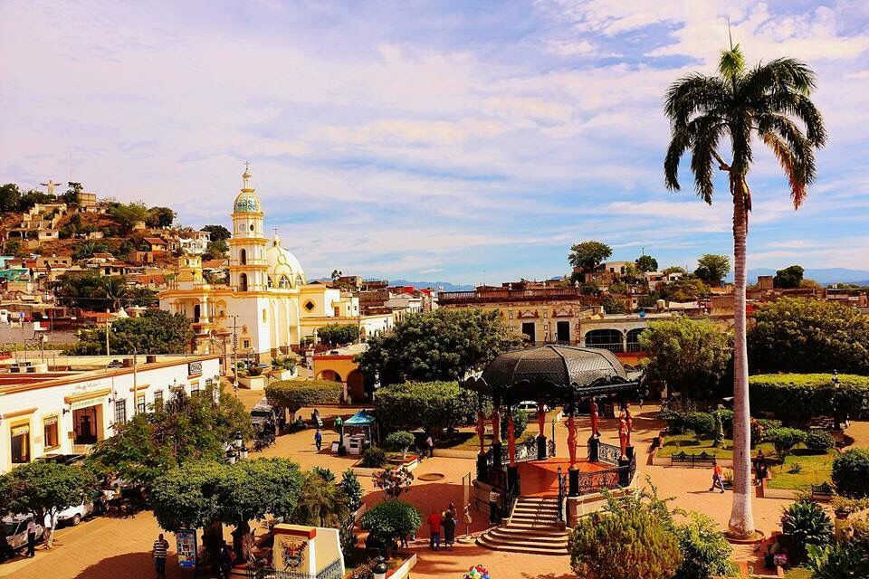
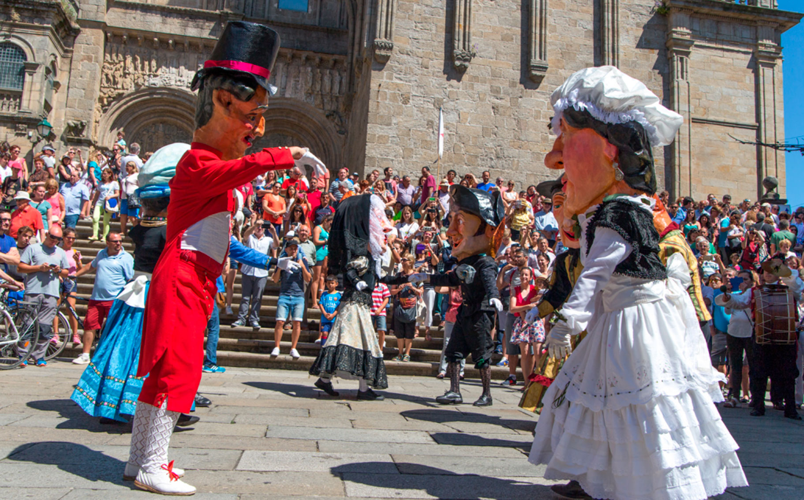
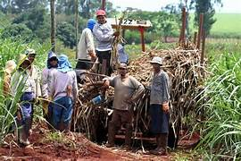

Santiago Ixcuintla es un municipio ubicado en la region costa norte de Nayarit, Mexico. Limita al norte con el estado de Sinaloa, al este con el municipio de Ruiz y al sur con la costa del Pacifico.
Entre las principales festividades de Santiago Ixcuintla se encuentran la fiesta en honor a Santiago Apistol, celebrada en julio, y la fiesta en honor a la Virgen de Guadalupe, celebrada el 12 de diciembre, con danzas, musica y eventos religiosos.
La economia de Santiago Ixcuintla se basa principalmente en la agricultura, destacando la produccion de calla de azucar, maiz, y frijol. Ademas, la pesca y la ganaderia tambien son actividades importantes en el municipio.
